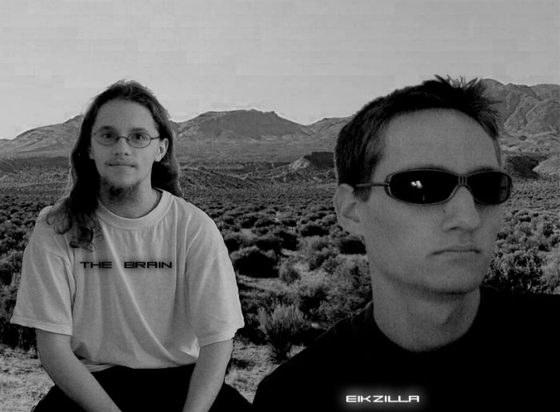

Comments, Ideas or Questions?
Write to
possibleworlds@eik.at
or blubb@origami.at
Feel free to sign
the Possible Worlds Guestbook!
Info
Possible Worlds is an openGL-accelerated 3D game that was created in the course of a Computer Graphics lab exercise at the Technical University of Vienna. It won the competition for the best game hands down and we originally intended to develop Possible Worlds even further with a network-multiplayer mode, more visual FX, etc.. Unfortunately, neither of us could be very much bothered to work on it any more in the Summer holidays, probably because we were a bit burned out by the great amount of work that was necessary to create this game in less than four months. Once university started again in October 2001, we again had a lot of things to do at university and could not get around to enhance Possible orlds, so we decided we'd finally open-source our work without all the enhancements we'd planned.
We regret the development
stop but we think the sourcecode might still be of interest for quite a
few people, although it might not be beautifully written at times ;) That
said, I still intend to do small updates on Possible Worlds, I'd still
love to see the caustics effect in action and I think the cockpit could
use some enhanced HUD too... and MORE MISSIONS!
A lot of people have emailed
us about implementing Joystick or mouse support or other minor changes.
Now that Possible Worlds is open source, just grab the SDL-docs
and this should be a matter of a few minutes. I don't like PC joysticks
much (they're crap for racing games) and I haven't got one, that's why
joy support wasn't in the game all along.
Actually, I'm starting to think about my next project which will most likely be some kind of a fast 3D multiplayer game incorporating sheep and a mechanical wolf. I think it should look like 42 (an openGL-screensaver i programmed for another lab exercise at university a couple of months ago, it won the competition for best screensaver ,see screenshots below :) I've already decided on a name for it, now all I need is an idea for the gameplay and LOTS of time.... ;) and yes, it will definitely run on Linux!
|
|
|
|
|
|
Finally, we want to thank
you for playing our creation and hope you have as much fun playing the
game or browsing the source as we had writing it. We received quite a lot
of feedback and rave reviews at various gaming sites that made the whole
thing worth it!
Features
Copyrights
Possible Worlds by Gerwin
Sturm & Eike Umlauf
Released under the terms
of the GNU Public License
all Source Code, Ideas,
Graphics, 3D Shapes and Sound by Gerwin Sturm & Eike Umlauf
except
Title Music
Utah
Saints - What can You do for me (Salt Lake Mix)
Intro Music
Chris
Huelsbeck - Turrican2 Title Theme (Tracked by unknown)
Outro Music
Chris
Huelsbeck - Turrican Credits (from mp3.com/huelsbeck)
Credits Music
Chris
Huelsbeck - Apidya Credits (from mp3.com/huelsbeck)
Briefing Music
Unknown - Human Target
Pong! Music
Mahoney & Kaktus - Wasserfast
(The Protracker creators themselves!)
re-tracked and digitally
remastered by Eikzilla
I'd like to point out that Chris Huelsbeck's Tracks are NOT used with permission, but since all tracks are freely available on the net and this is non-profital use of his material, I hope we won't have his lawyers bashing our doors down ;)